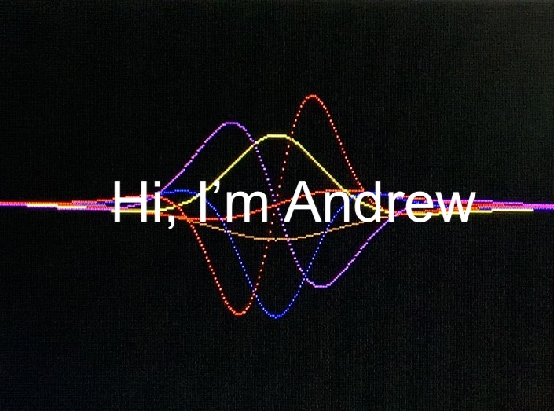
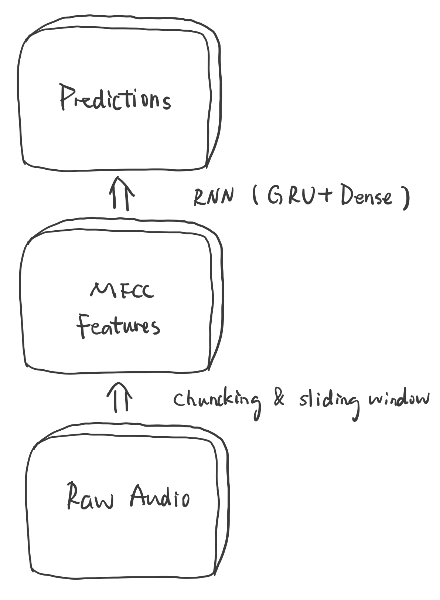
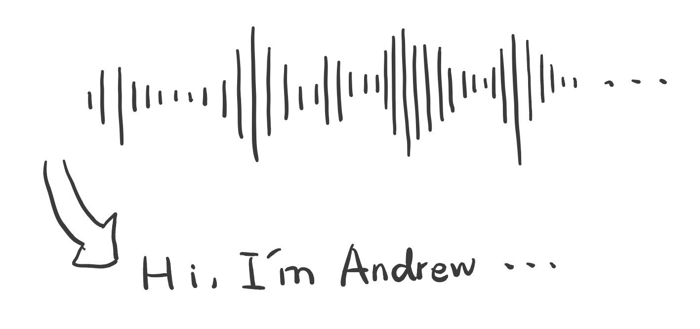
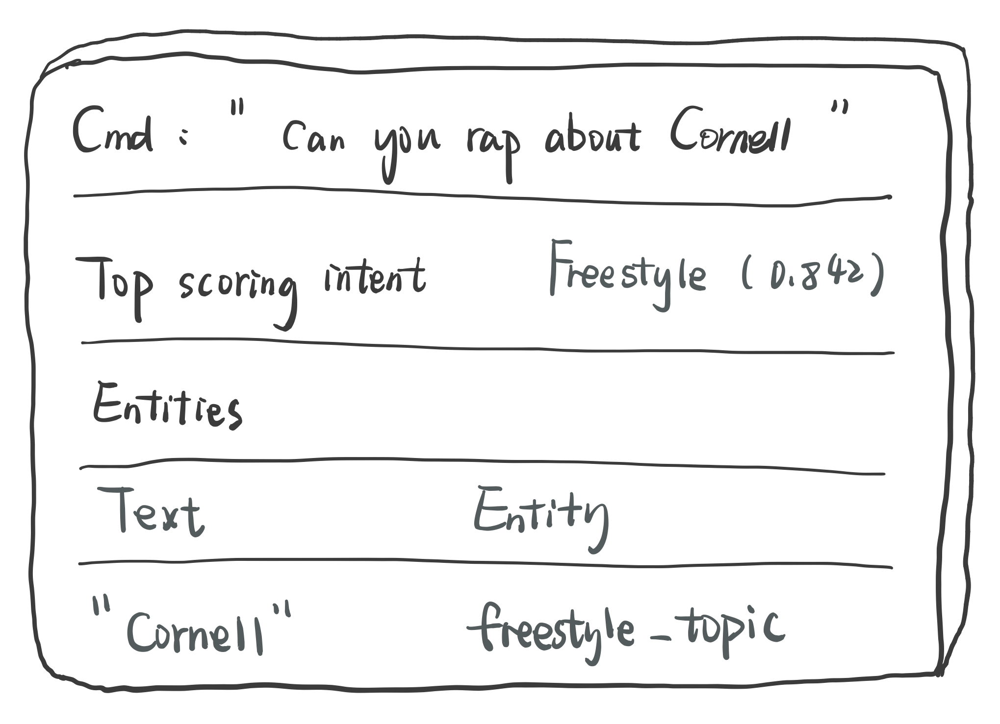
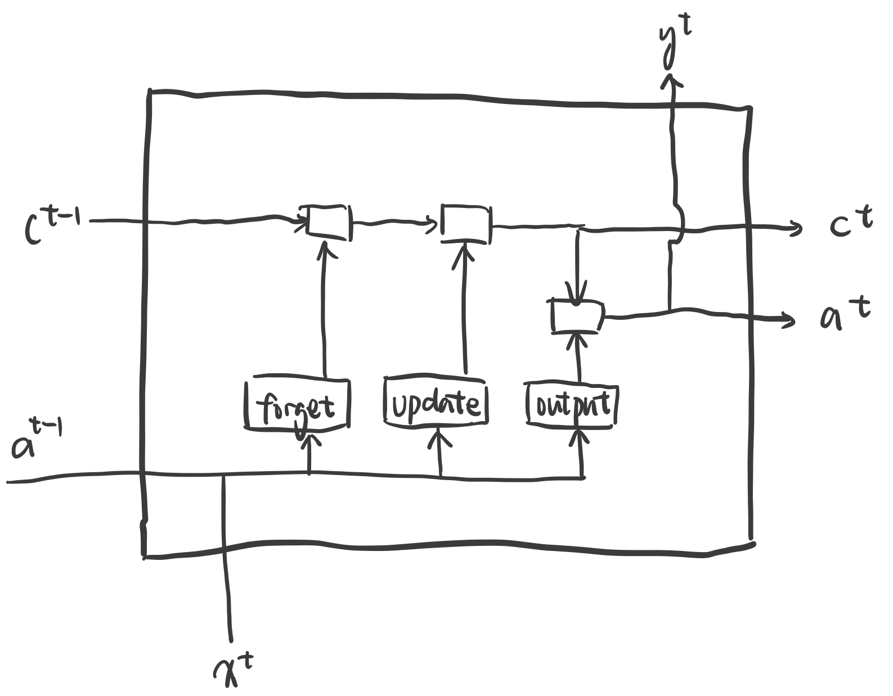
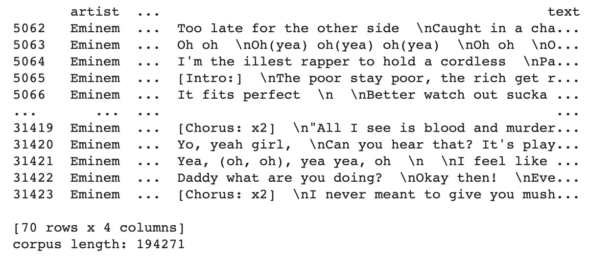
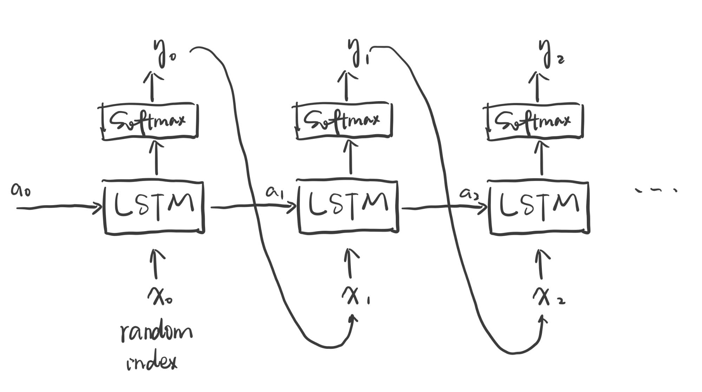
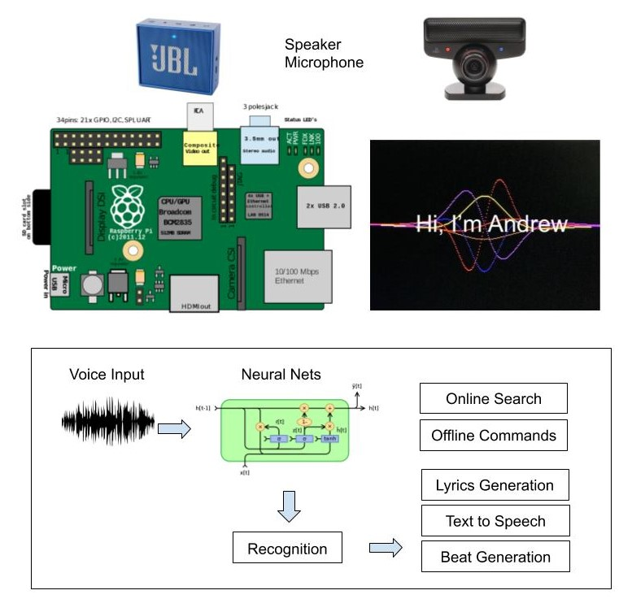
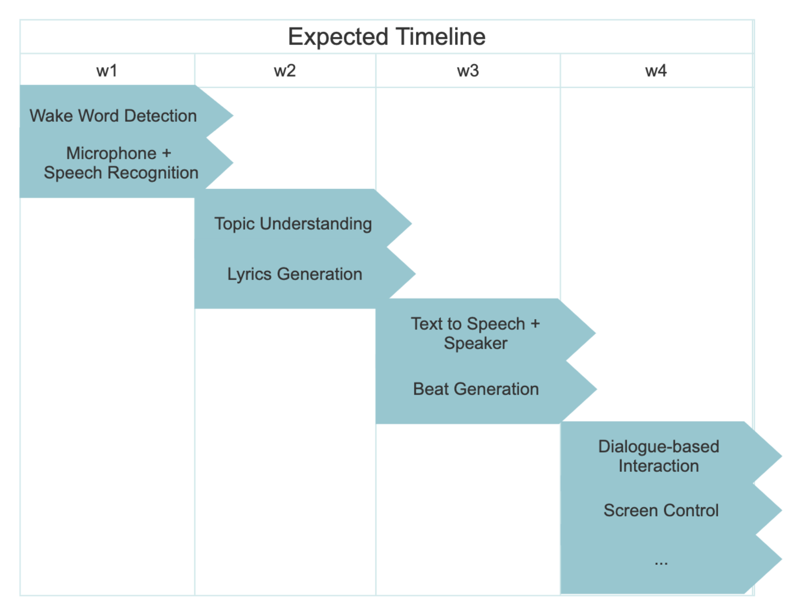

Our design is a Raspberry Pi-based intelligent assistant that can do freestyle rapping about a certain topic
given by the voice command from the user. It will automatically detect the trigger word(its name "Andrew"),
transform voice collected from microphone to text, and then understand the topic from a natural language
sentence, generate related lyrics and background beat, and eventually play them with the speaker. We also
implemented the screen display, which could show the dialogue content and signal waves as background. And
finally we optimize the dialogue-based interaction so that it will speak out the current weather of a given
location. It is an embedded device with microphone and speaker as input and output, and can interact with users
using voice and language processing algorithms.

Project Objective:
Wait quietly and wake up when its name is called
Understand your voice command and make reactions accordingly
Generate hip-hop lyrics on-the-fly and rap it with the machine-generated music
Design & Testing
Wake word detection
Build up a wake word listener to continually listen to sounds around the device, and activate when the
sounds or speech match a wake word. First, we use chunking to calculate the MFCC features of the speech
real-time, and then input the generated features into a neural network consisting of 20 gated recurrent
units (GRUs), finally making predictions every chunk to check whether it is the wake word or not.

Speech to Text & Text to Speech
Once the wake word is detected, the speech-to-text function will be triggered to record and convert voice to
text. Considering the performance of Raspberry Pi, we chose to use mature online service to do the
recognition. By continuously sending the audio chunks to the Google Cloud Speech API, we are able to get the
real-time recognized text.

Topic understanding
With the text recognized, we need the Raspberry Pi to understand the content of the text, so that it can
make correct reactions to the user’s command. We make the use of Microsoft Azure Language Understanding
service (LUIS) to extract user’s intent and the corresponding entities from the recognized sentence. In our
system, we defined two major intents: “Freestyle”, “Weather” and for other topics, currently we just ignore
them. With LUIS, we are able to get the entities in the sentence, for example, if we ask about the weather
in a specific city, the city name will be returned as an entity. So we are able to flexibly process these
intents.

Rap lyrics generation
In general, we used a character-level Recurrent Neural Networks with LSTM unit. We chose character-level
representation because:
it does not require tokenization as a preprocessing step
it does not require unknown word handling
it could generate on a comparatively small vocabulary, less memory
it could mimic grammatically correct sequences for a wide range of languages
it also include punctuations to make pause of lyrics more natural
We chose the LSTM (long short-term memory) unit because it could take more context into consideration and
avoid vanishing gradient at the same time.

We picked Eminem as the imitation object of our model because according to a study(conducted by lyrics site
Musixmatch), Eminem has the largest vocabulary in the music industry. I found a lyrics dataset scraped from
LyricsFreak, which includes 70 Eminem songs.

We first combine those entries into a large 200k-character string with 50 unique characters, then cut the
text into semi-redundant sequences of characters and the vectorize them into the input sequence, the output
sequence is the next character of this sequence in the corpus.
The model is built on keras example, consists of a linear stack of long short-term memory layer and a
regular fully-connected neural network layer. Because of the limit of computational resources, each epoch
takes about 1 minute. The model is trained 1200 times and this part cost us 30 hours in total.

Beat generation
The deeping learning AI team provided a dataset, which preprocessed the musical data so that we could render
it in terms of musical "values." Each value can be considered as a note, which comprises a pitch and
duration.
Similar to the text generation model, the beat generation is also learnt by a LSTM network. The architecture
of the model is illustrated in the figure below. The difference between the lyrics model and the beat model
is
the first input is randomly generated rather than given by the user.
Issues
Audio Driver issue: Although we can directly use the built-in audio players like "aplay" to
play raw audio files. Our goal is to use Python code to dynamically record and play the sound chunks. The
library we use, PyAudio, cannot use the built-in 3.5mm headphone jack and the USB microphone at the same time.
We fix this by switching the playing part to the pyalsaaudio library.
Stream file conversion: The generated beat is saved in the music stream originally. There is
no straight function or package to save stream as ‘.wav’ files directly, so we saved it as ‘.midi’ files first
and then transfer them to ‘.wav’ files that are convenient to play on Raspberry Pi.
Explicit lyrics filter: We didn’t preprocess the 200,000 characters before training the model
so the generated lyrics inherent some bad words from Eminem’s songs. We tried to replace the bad words we
could imagine with ‘love’ but failed to enumerate them.
Drawings

Final demo
Result
We basically followed our expected time schedule and accomplished the basic
functions we proposed in the first proposal. In addition, this freestyle Pi can implement some dialogue-based
interactions, for example, it can tell you the weather of a given location and the most handsome man in the
world, so we consider this project as a success. Future work is needed to make this voice assistant more
intelligent.

Future Work
The lyrics generation starts with the given topic word, so actually we are not freestyle about the topic. We
plan to use words that are close to the topic in word embeddings to compute the lyrics rather than the
single topic word.
Character-level language models require more training epochs and larger corpus to make its output text
sequence more natural.
We could further employ a plug-in board for beat generation. Taking user input as the first token of the
beat generation network.
Work Distribution
Project group picture
Xin
xf78@cornell.edu
Designed the overall software architecture (Just being himself).
Yangmengyuan Zhao
yz2453@cornell.edu
Lyrics and Beat Generation
Figure Design and Vedio Edition
Project Parts
Parts
From
Cost
Raspberry Pi
Lab
$0.00
Speaker
Lab
$0.00
PS3 Eye Microphone
Amazon
$8.53
Total: $8.53
Acknowledgements
We really appreciate everyone who has helped us building this project: